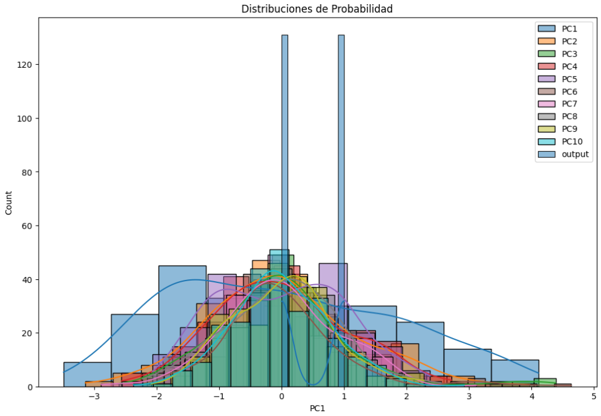

Soy Borja Esteve, científico de datos con más de dos años de experiencia en análisis de datos, machine learning e investigación en inteligencia artificial.
Cuento con un Máster en Inteligencia Artificial Avanzada y Aplicada, y una sólida formación en deep learning y desarrollo de soluciones innovadoras en IA.
He implementado soluciones generativas basadas en modelos de lenguaje para clasificar llamadas y generar informes dinámicos, y contribuido a un proyecto de inspección industrial mejorando la precisión del modelo mediante imágenes sintéticas creadas con GANs.
Mi enfoque se centra en el análisis y resolución de problemas, utilizando los datos para impulsar decisiones estratégicas de negocio.
Puedes saber más sobre mí accediendo a mi Linkedin: @borjaesteve.


Trabajo de Fin de Grado en el que desarrollé un sistema basado en Deep Learning para generación de mapas LULC a partir de datos satélitales.
Proyecto de NLP para el concurso IberLef donde se desarrolló un sistema de clasificación de estereotipos raciales basado en Machine Learning.
Repositorio con los proyecto realizados durante el curso 'Deep Learning aplicado al análisis de imágenes y señales' por la UPV.

Pipeline automatizado en el que el usuario pude elegir tanto las acciones de preprocesado de los datos como el modelado de estos.
.jpg)
Este repositorio contiene todos los trabajos realizados durante el máster ordenador por asignatura..
.png)
Curso de introducción a los LLMs con Pythhon en el que se introduce el uso de arquitecturas avanzadas como los Transformers.

Curso de introducción a la ingeniería de prompt enfocado a desarrolladores.

Desarrollo de dos redes DCGAN para la generación de imágenes sintéticas de MRIs de tumores malignos.
Ponente en PyConES24 con la charla "Flujos de Agentes de IA en Python" (https://pretalx.com/pycones-2024/talk/8RHWXP/), sobre el uso de agentes de IA colaborativos en workflows autónomos. Expuse criterios clave para diseñar estos flujos (reflexión, planificación y colaboración) y presenté casos prácticos en desarrollo y optimización de proyectos en Python, orientado a un público general con conocimientos básicos del lenguaje.